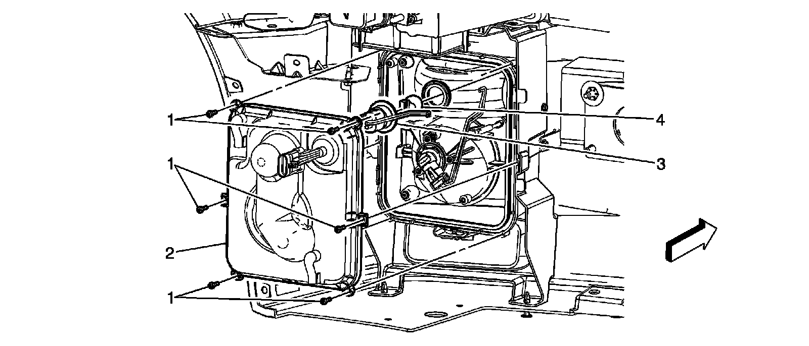
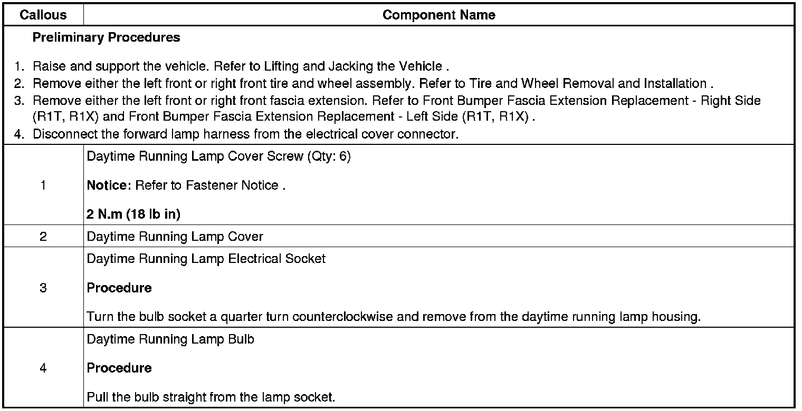

Operation CHARM
: Car repair manuals for everyone.
Home
>>
Cadillac
>>
2008
>>
SRX AWD V8-4.6L
>>
Repair and Diagnosis
>>
Lighting and Horns
>>
Daytime Running Lamp
>>
Service and Repair
>>
Daytime Running Lamp Bulb Replacement
Daytime Running Lamp Bulb Replacement
Daytime Running Lamp
Bulb Replacement

